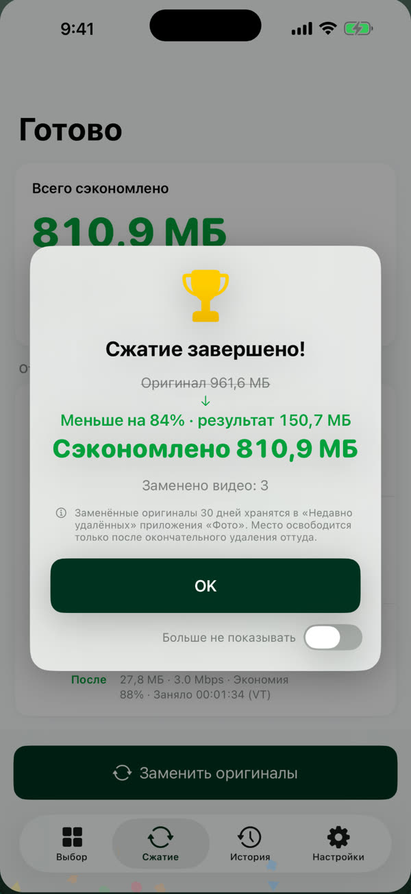
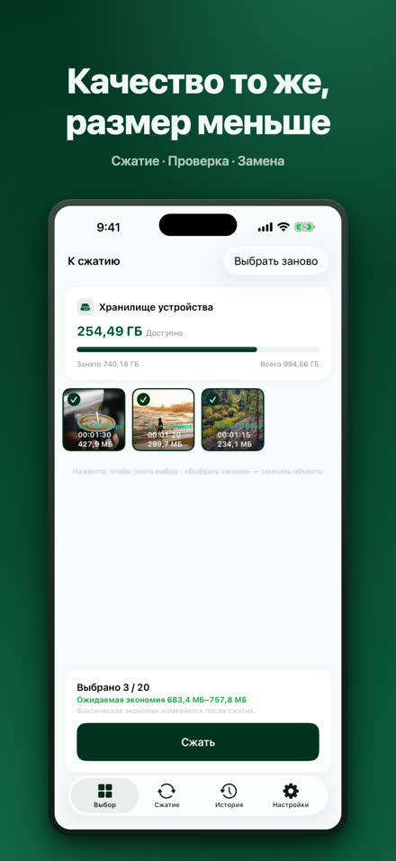
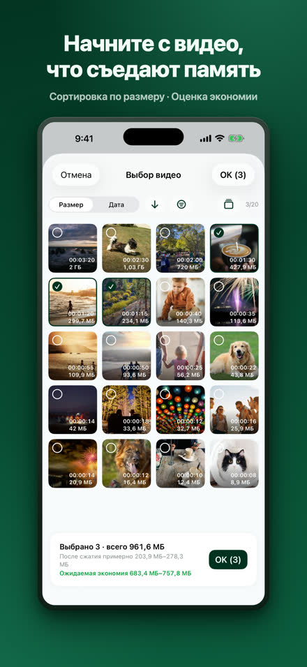
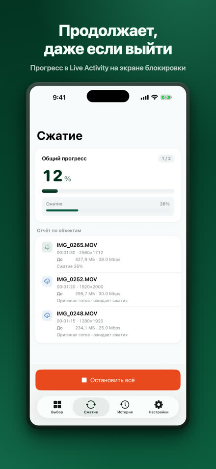
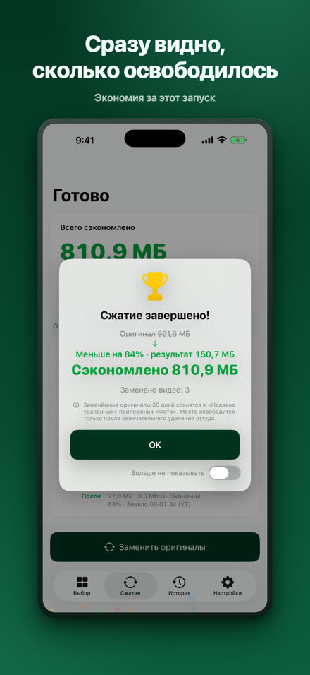
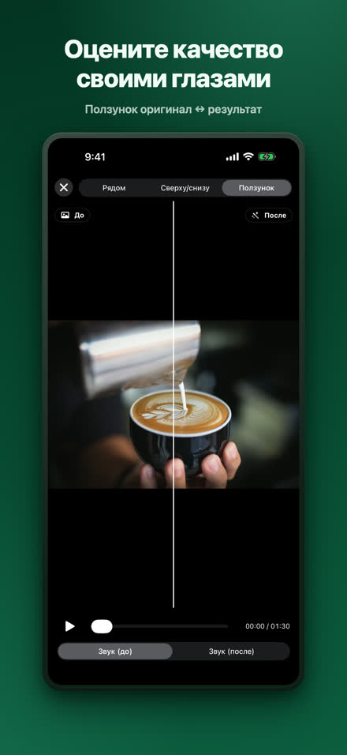
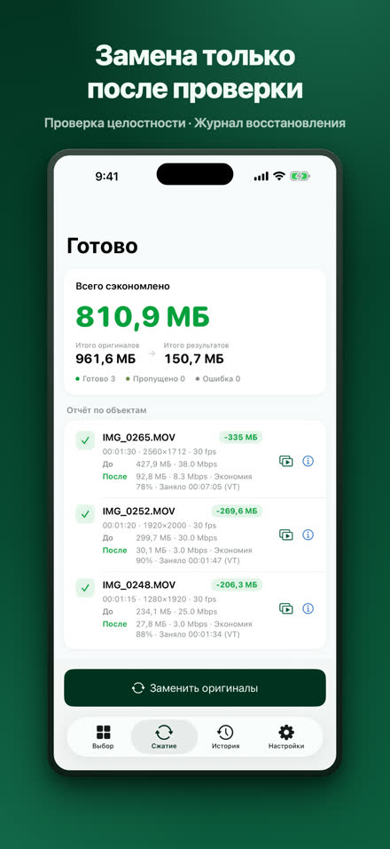
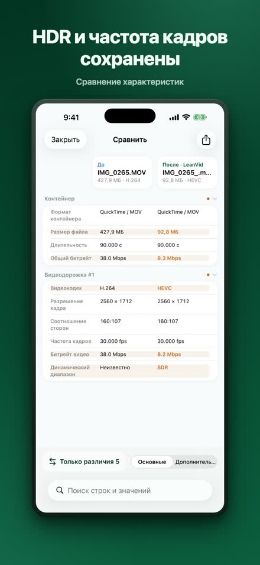
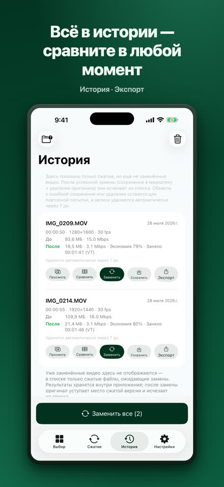

Уменьшайте видео, сохраняя качество.
LeanVid сжимает видео из медиатеки и приложения «Файлы», снижая только битрейт, — разрешение, частота кадров, цвет и HDR остаются прежними. Каждый результат проверяется перед заменой оригинала, а оригиналы из медиатеки можно восстановить в течение 30 дней.
Загрузите в App StoreiOS 18 или новее · iPhone и iPad (также работает на Mac с Apple silicon как приложение для iPad)

То же видео — в разы меньше места.
Наш тест: запись экрана длиной 3 мин 34 с. Результат зависит от видео.
Выберите, сожмите, проверьте, замените.








Всё нужное уже внутри.
только битрейт, HDR и все дорожки сохраняются
проверки целостности, журнал восстановления, системное подтверждение
сравнение бок о бок и с ползунком, полная таблица характеристик
выбирайте видео из «На iPhone» или iCloud Drive; файлы MKV, WebM, AVI, WMV, FLV, TS, MPG и VOB конвертируются в HEVC/MP4 прямо на устройстве
сжатие в фоне с индикатором прогресса Live Activity (iOS 26 и новее); на более ранних версиях сжатие автоматически возобновляется при возвращении в приложение
ваши видео сжимаются прямо на iPhone и никуда не загружаются; учётная запись не требуется — Конфиденциальность